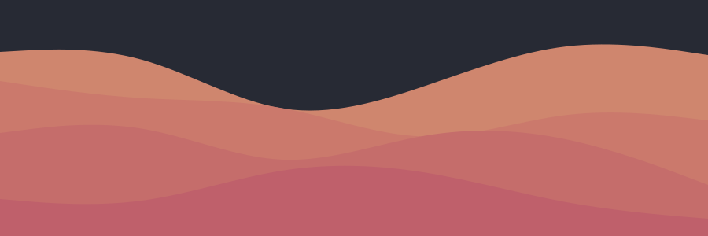
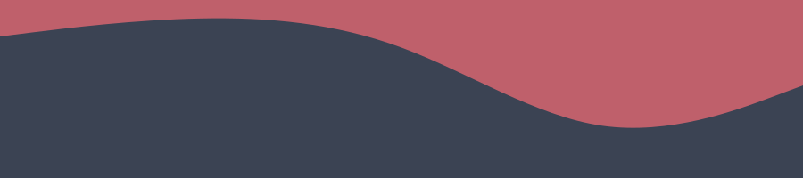

RSSTube
Trazendo seus vídeos até você

Sobre o projeto:
Este projeto baseia-se na ideia de feeds RSS, em que você pode acessar diferentes
conteúdos de diferentes plataformas em uma única aplicação, unindo vídeos de tudo
aquilo que você tenha interesse em um só local.
O projeto é feito de forma
100% open source,
usando apenas HTML/CSS, (com uso do framework Tailwind CSS),
JavaScript e NodeJS para backend.
Já são aceitas no site as plataformas do YouTube e Odysee/LBRY.
